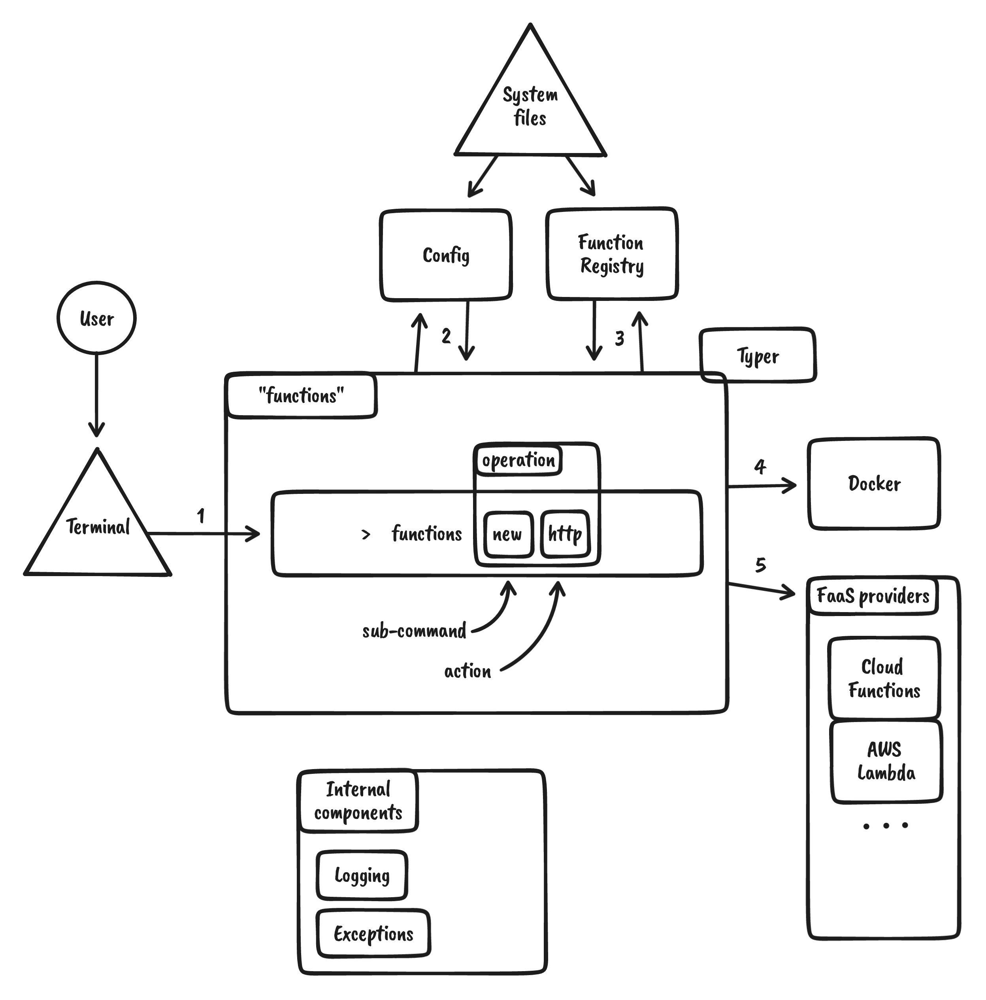

How it works
As it is with many projects, sometimes you barely have any idea how your tools work. Ha! Not here! We want to give you an opportunity to understand how things work behind the scenes.
Knowing this is not required to use functions, but if you are a born Curiosateles, check it out.
So how does functions work?¶
We will look here in a high level overview of how this tool structured. How different components interact. What happens when you type a functions command and which components are triggered.
Layout¶
Here lays a high-level layout of how our tool is built and how various components interact.

Following assumes that functions is installed and available in the terminal.
- User types a
functionscommand in the terminal. functionswill evaluate available components and store this information in the config file. Command will raise exceptions if required components likedockerare not present.- Next, it will evaluate the registry if information about this function is available and if said registry needs to be updated.
- Depending on the command type,
dockerwill be used to run or serve a targeted function. - If a command deploys resources to a cloud provider, we will use the correct provider to manipulate resources. Subject to authorization and sub-tool (like
gcloud) availability.
Internal components¶
Typer core¶
Our tool is built on top a well known typer CLI tool.
Config¶
Custom component responsible for saving functions configuration information on the file system.
Functions Registry¶
Custom component responsible for saving information about each added, build, run, stopped and deployed "function". Information stored on the file system.
External components¶
Docker¶
All that makes functions fun, easy and functional is power by docker. We use it manage your functions locally and more.
FaaS providers¶
- Google Cloud Platform (GCP) - We use
cloud functionsas a proof of concept for creating FaaS resources in the cloud. - More to come...
Invisible patterns¶
Exceptions- A set of methods, wrappers and custom error classes built to handle exceptions from different parts of the tool in a unified way.Logging-functionscan manipulate cloud and local resources therefore aloggingfunctionality was developed to offer the bare minimum of viewing operation outcomes.